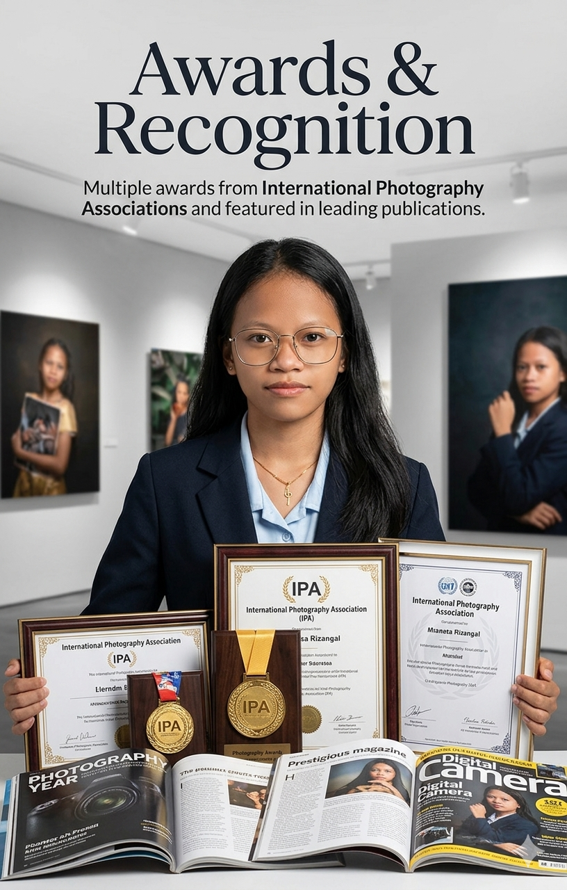
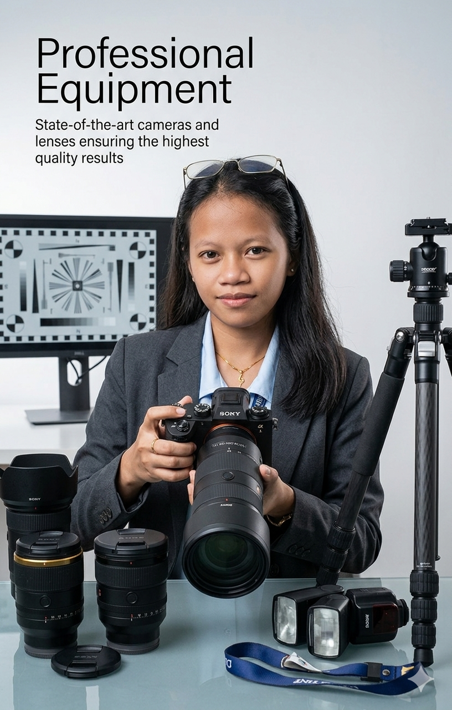

About Me
Professional photographer dedicated to capturing authentic moments
Christy Mae Sumongod
Welcome to my photography portfolio. I'm Christy Mae Sumongod, a professional photographer with over a decade of experience capturing life's most meaningful moments. My passion lies in translating emotions and experiences into compelling visual narratives that resonate with viewers.
My Philosophy
I believe that every moment tells a story. Whether it's the quiet elegance of a landscape, the joy radiating from a celebration, or the authentic character of a portrait, I am committed to capturing the essence of life through my lens. My work is driven by a deep appreciation for light, composition, and the human connection.
Throughout my career, I've had the privilege of working with diverse clients—from intimate personal projects to large-scale commercial assignments. Each project brings unique challenges and opportunities to push my creative boundaries. I specialize in nature photography, event coverage, professional portraits, and travel documentation.
My approach combines technical excellence with artistic vision. I invest time in understanding my clients' needs, building meaningful relationships, and delivering results that exceed expectations. Every photograph I create is a reflection of my commitment to excellence and my passion for the craft.
Core Competencies
Capturing nature's grandeur
Documenting special moments
Professional headshots & sessions
Global storytelling & exploration
Product & branding solutions
Professional editing & retouching
Experience & Recognition

Awards & Recognition
Multiple awards from International Photography Associations and featured in leading publications
10+ Years Experience
Dedicated professional experience with hundreds of satisfied clients globally

Professional Equipment
State-of-the-art cameras and lenses ensuring the highest quality results
Background & Education
I began my photography journey as an enthusiast, capturing moments for friends and family. My formal training in photojournalism and visual arts at leading institutions provided the technical foundation necessary for professional practice. Over the years, I've continuously refined my skills through workshops, international collaborations, and real-world client projects.
When I'm not behind the camera, I'm exploring new techniques, mentoring emerging photographers, and seeking inspiration in diverse cultures and landscapes. I'm passionate about giving back to the photography community and contributing to the elevation of visual storytelling as an art form.